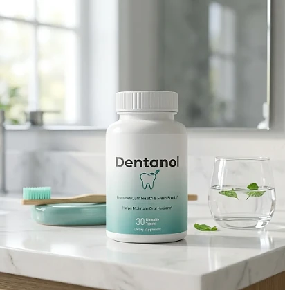
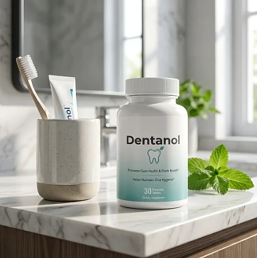
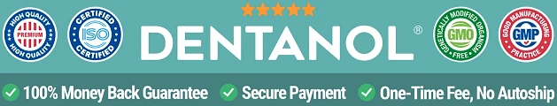

What Is Dentanol And How Does It Work?
Dentanol is a dietary supplement in chewable tablet form designed to support healthy gums, fresh breath, and everyday oral hygiene for adults who want to address gum sensitivity, bad breath, and the feeling that brushing alone is not enough through a natural, convenient approach — without complicated routines or temporary quick fixes.
According to the product label, Dentanol promotes gum health and fresh breath and helps maintain oral hygiene. The official website describes it as a way to support a healthy mouth naturally, with three goals: supporting a healthy mouth, maintaining mouth health, and supporting strong gums.
The sales presentation on the official website calls the routine a bedtime "mineral ritual", built around taking the chewable tablet as part of the evening routine, after brushing, so it works while you sleep, particularly for people who prefer one simple daily habit over multiple products or complicated plans.
Rather than acting as a short-lived cosmetic fix like a mint or a strong mouthwash, Dentanol focuses on supporting the mouth from within, working gradually alongside brushing, flossing, and regular dental visits to help maintain healthy-looking gums and a fresh mouth over time.
With consistent daily use, the formula is intended to support fresher breath, a cleaner feeling in the mouth, and more confidence when you smile and talk, especially when combined with good brushing habits, hydration, and a balanced diet low in sugar.
From a practical standpoint, Dentanol is a daily oral health chewable — there is nothing to rinse, mix, or swallow with water, and a bottle fits easily on the bathroom counter next to your toothbrush.
It is a dietary supplement, not a dental treatment, and it does not replace brushing, flossing, or professional care. The official website does not publish the list of ingredients or the label, so anyone who wants to check the formula should look at the Supplement Facts panel on the bottle or ask customer support before ordering.
Dentanol Side Effects
Dentanol is presented by the official website as a 100% natural oral health supplement, designed for adults who are looking for a simple, gentle approach to gum health and fresh breath, especially those who prefer an easy chewable tablet over strong rinses or complicated routines.
Because the official website does not publish the list of ingredients, it is not possible to check each component for allergies or interactions in advance. The safest approach is to read the Supplement Facts panel on the bottle before the first tablet and to stop using it if you notice any reaction.
There are no widespread reports of serious side effects on the official website. As with any chewable supplement, people with food allergies, sensitivities, or dietary restrictions should confirm the ingredients first, and anyone with ongoing gum bleeding, pain, swelling, or a loose tooth should see a dentist, since those signs need professional care. It is not intended to diagnose, treat, cure, or prevent any disease, and individual results may vary.
The official website advises that anyone who is pregnant, nursing, taking medication, or has a medical condition should consult a physician before using its products. The same applies to children and teenagers, ensuring Dentanol fits safely within each person's wellness plan.
Dentanol Dosage
Each bottle of Dentanol contains 30 chewable tablets, as printed on the front of the label, and the product is designed to fit easily into a daily routine, making consistency simple and convenient. As a chewable tablet, it requires no water, no rinsing, and no capsules to swallow.
The official website presents Dentanol as a bedtime routine, so many people take it in the evening after brushing their teeth. The exact directions, including how many tablets to take per day, are printed on the bottle, and the official website does not repeat them, so always follow the suggested use on your label.
For best results, consistency is key. Oral health builds day by day, and using the tablets regularly, at the same time each day, is what allows the routine to work as intended. With one tablet a day, a bottle of 30 lasts about a month.
There is no need for complex schedules or multi-step routines. Dentanol is designed to complement, not replace, the basics: brushing twice a day, flossing, drinking water, limiting sugary snacks and drinks, and visiting your dentist for regular cleanings. Store the bottle closed, in a cool, dry place, out of the reach of children.
As with any dietary supplement, it's important not to exceed the recommended dose and to check the label on your bottle. Dentanol works best when used regularly, combined with good oral hygiene and the guidance of your dentist or healthcare professional.
Dentanol – Refund Policy
You can order Dentanol with confidence, knowing that every purchase is protected by a 60-day, 100% money-back guarantee. This allows you to try the product and decide if it delivers the support you expect.
According to the refund policy on the official website, if for any reason you are dissatisfied at any time during the first 60 days after purchase, you can call or email support to request a refund. You pay the return shipping and send any unused bottles to Dentanol, 19655 E 35th Dr #100, Aurora, CO 80011, USA.
How the refund process works: Contact customer support by phone or email to request your refund, then ship any unused bottles to the return address. Once the refund is processed, you will receive an email confirming that it is complete. Sharing the reason for the return is optional and not required to get your refund.
Customer Support Contact Information: +1-877-766-1434 (7AM to 9PM, 7 days a week) or support@mydentanol.com, as listed on the official website. According to the contact page, phone calls are answered by a live agent within a few minutes, and emails within 24 hours or less.
Refund Processing Time: According to the policy, refunds take 5 to 7 business days to appear on a credit card and 5 to 10 business days on a debit card, depending on your bank.
This refund policy is designed to give customers a clear and transparent experience when trying Dentanol, with a published return address and support available every day of the week.
Dentanol – Where To Buy
Dentanol is sold through its official website, so if you decide to try it, it's important to be careful about where you purchase it. The official website is the only sales channel the manufacturer lists, and it does not point to marketplaces such as Amazon, eBay, or Walmart.
Listings on third-party platforms may look similar but cannot be verified as authentic, raising concerns about safety, quality, and ingredient freshness. Products purchased outside the official source may not be covered by the money-back guarantee.
For this reason, it makes sense to purchase Dentanol only through the official website. Buying directly from the official source ensures you receive the authentic original product, with access to customer support and the full guarantee. Orders placed there go through a secure checkout, and the return and contact pages are linked at the bottom of the official page.
To avoid counterfeit batches and ensure maximum quality, always verify that you are ordering from the official Dentanol website before completing your purchase.
To ensure you’re getting the authentic product, most users choose to visit the official website.
Is Dentanol A Scam?
Based on what the official website discloses, Dentanol appears to be a real product: a chewable oral health supplement sold through an established retailer (BuyGoods), with a published refund policy, a return address, and customer support by phone and email. It is designed to support healthy gums and fresh breath as part of a consistent routine.
The main point of attention is transparency about the formula. The official website shows images of plants under "Powerful Ingredients" but does not name them, and it does not publish the label or the suggested use. Before ordering, it is worth asking customer support for the full ingredient list.
On the other hand, the support details are clear: a toll-free phone line open from 7AM to 9PM every day, an email address with a reply promised within 24 hours, and a physical return address in Aurora, Colorado, with a focus on customer service and simple returns.
The official website shows a grid of customer photos under "The Proof", but it publishes no written testimonials with names, so this review does not quote any. Results vary from person to person, and no supplement replaces brushing, flossing, or the care of a dentist.
Dentanol is backed by a 60-day, 100% money-back guarantee, and the refund rules, including the return address and the processing times, are published on the official website, which underscores the company's commitment to customers.
If you're looking for a simple daily chewable to support healthy gums and fresh breath without complicated routines, Dentanol is worth considering — especially when purchased directly from the official website.
For those who want to verify product details or check current availability, the official Dentanol website remains the safest option.

Check Availability On Official Website
